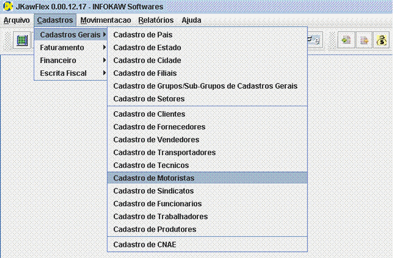

|  |
1. Para efetuar o CADASTRO DE MOTORISTAS, selecione na barra de Menu a opção CADASTROS, em seguida CADASTROS GERAIS, e CADASTRO DE
MOTORISTAS. |
![[IMAGE]](images/barracad.gif) |
2. Antes de preencher os campos, clique em INSERIR NOVO REGISTRO situado na barra de Opções. |
![[IMAGE]](images/barracad2.gif) |
3.1 Após preencher os campos, clique no botão VALIDAR REGISTRO CORRENTE situado na barra de Opções, e em seguida clique no botão SALVAR. |
![[IMAGE]](images/errocad.gif) |
3.2 Caso ao clicar no botão VALIDAR REGISTRO CORRENTE aparecer uma janela de erro com a mensagem "Campo requerido com valor inválido ou não informado",
verifique se o dado informado no campo mostrado pela mensagem está correto. Após corrigir o erro siga os passos do item 3.1 novamente. |